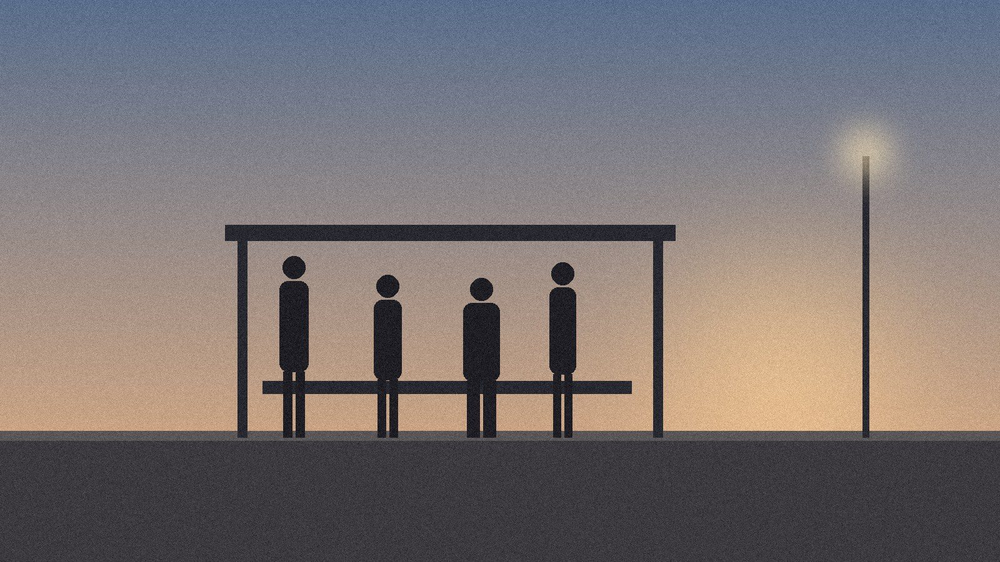

DEVELOPMENT ARTREPUరేపు
SHORT FILM · HUMAN DRAMAAt a familiar bus stop, four people living separate lives slowly find connection through ordinary encounters, small gestures and shared memories. A story about loneliness, companionship and the possibility of tomorrow.